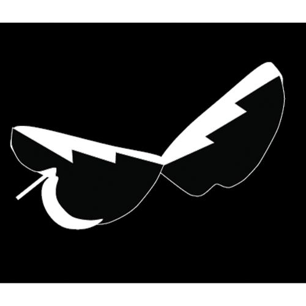

DIGITAL DESIGN
Introduction to digital design
Fall Sesmester 2024 with Professor Steve Lambert

I can see the growth with each illustration that went on and can see how my first ideas weren't logo ready. Here my ideas were very over the top illustrations that slowly were calmed downed.
I began taking only certain aspects of what was really needed to create a logo. I was very attached to some of my first illustrations but I am happy with how the end logo resulted.
I have never created so many artboards on illustrator for one project! But I think this is the biggest take away. Starting of with thinking of iterations for one word and then creating over 30 iterations for our illustrations is what allowed for the last version of the logo to be simple and muted while still incorporating the same concepts of a "stormy apple"I can see the growth with each illustration that went on and can see how my first ideas weren't logo ready. They were very over the top illustrations that slowly were calmed down and taking only certain aspects of what was needed to create a logo. I was very attached to some of my first illustrations but I am happy with how the end logo resulted in! I learned so many new technquies on Illustrator with this first project that it even helped me create a logo for my own photography account!
We were allowed to pick whatever topic we wanted our poster to be about. I chose farmworkers rights since it is a topic I am very passionate about! Over the several weeks of working on the poster, our last version that we showed before it getting the OK to get printed had to show: our guidelines & grid, margins, must be in CMYK be 18x24 in dimensions and lastly be around 3 colors only.
I am really proud of the poster I created in this class. It comes from a long line of wanting to advocate for the hard-working (at many times) latino immigrants who get so little work and human rights in return. I had gotten inspiration from a streetart wall I had seen in San Fransico in 2017, and is why I used the words "La Tieera es De Quien La Trabaja" (the land is of those who work it) and I wanted to add "Apoya la Raza" (support your people, or help your roots/race) because I think it was a straight to the point way of saying support farmworkers.
I started the poster first making animation but quickly hated the way they looked so I decided to use realy image of farmworkers. I downloaded a preset from retrosupply.co to create the halftone effect on the images of the farmworkers. I played a lot with the colors, and actaully printed a different version than the one you are seeing. But I went back after the semester was over and edited down how many colors I used and like this final version a lot bettter. WIth everything going on this year in terms of protest and immigration rights, I ended up putting this poster on etsy earlier this year, in case people wantto protest with it!